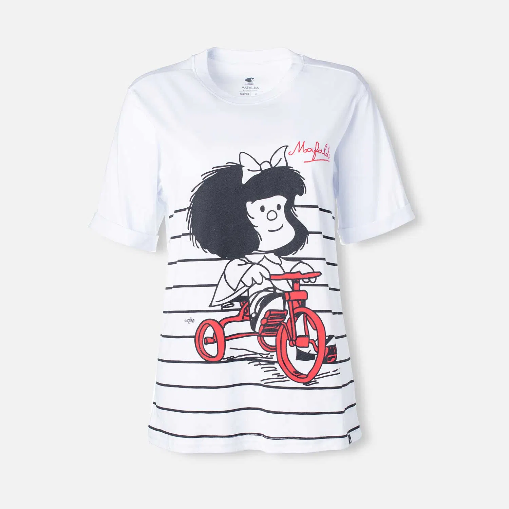

MANGA CORTA BLANCA
Descripción
Lavar a mano o en maquina - No lavar en seco - No dejar en remojo - No retorcer ni exprimir - Usar agua fría - Usar jabón suave - No usar blanqueador - No blanquear - No usar secadora - No planchar - Secado en tendedero a la sombra.99% Algodón 1% Elastano.Camiseta de mujer, manga corta blanca de Mafalda